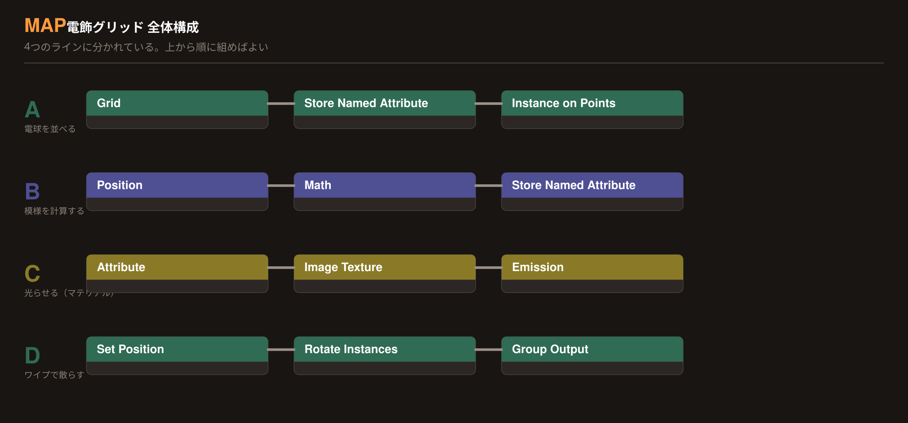
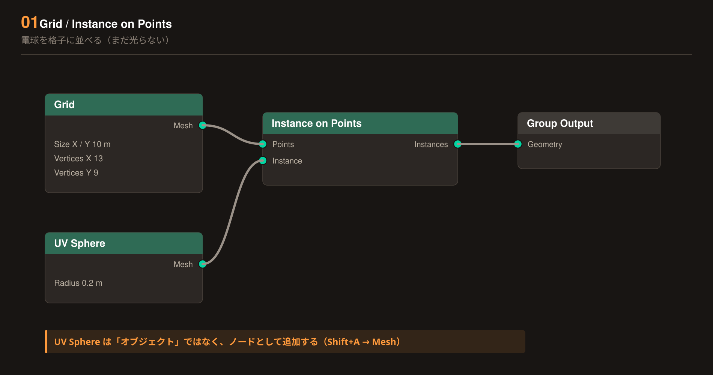
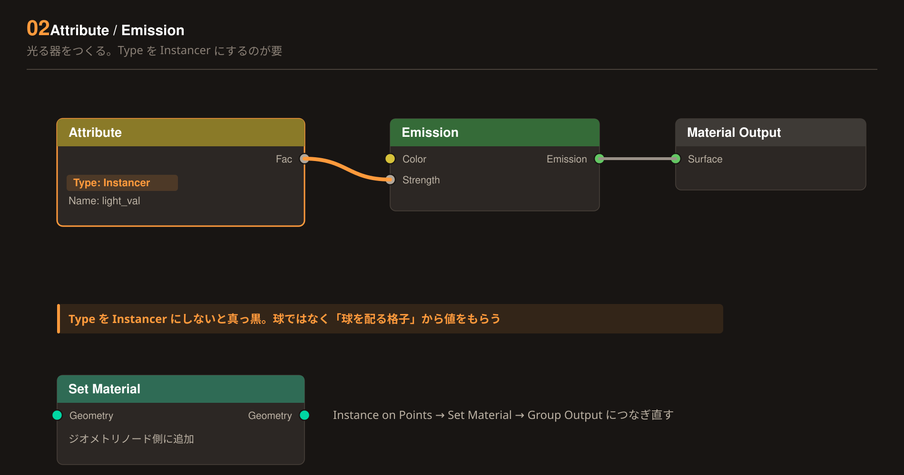
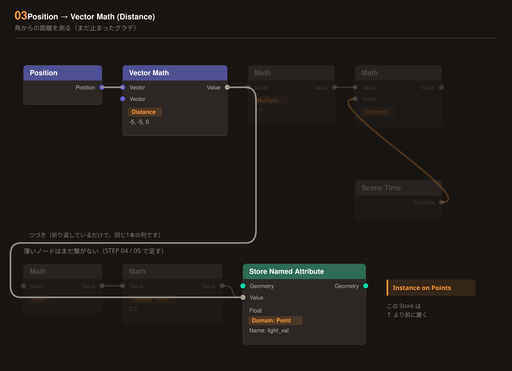
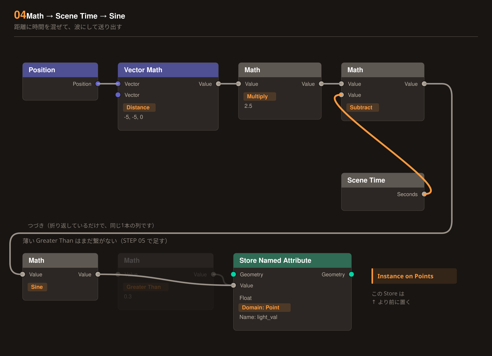
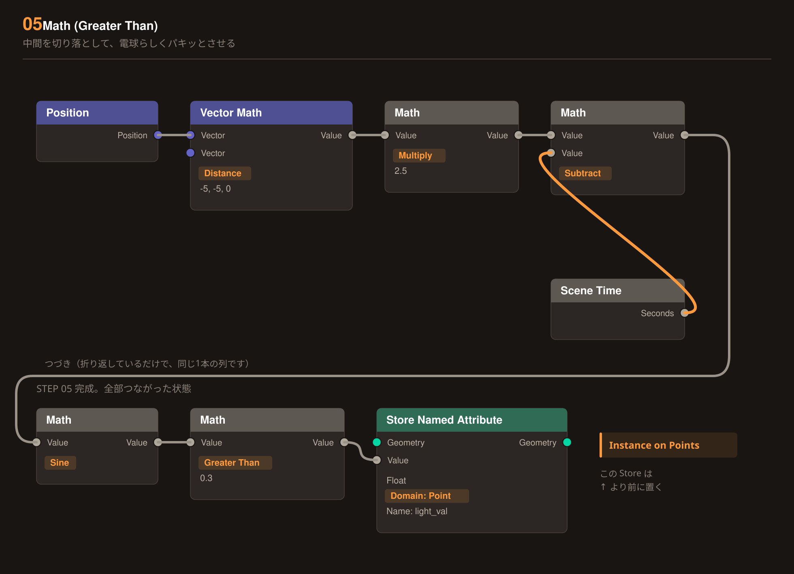
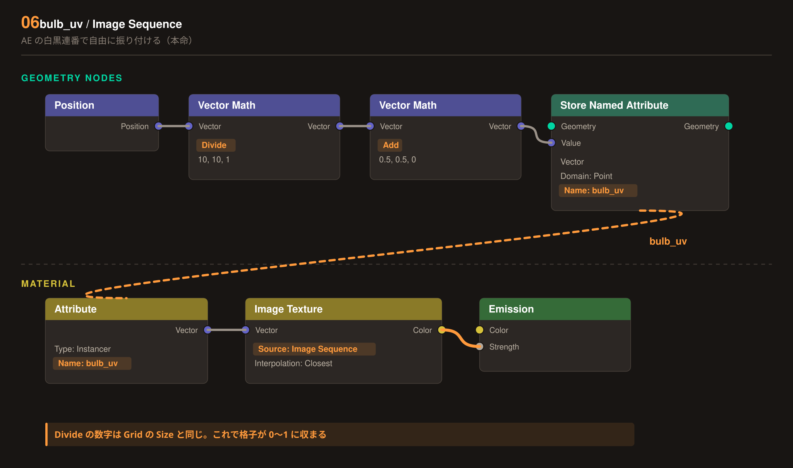
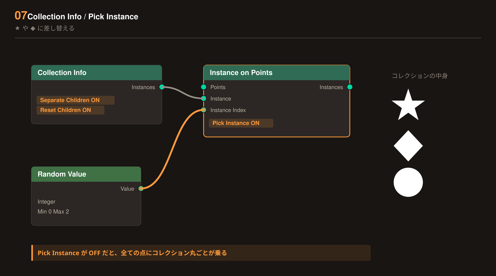
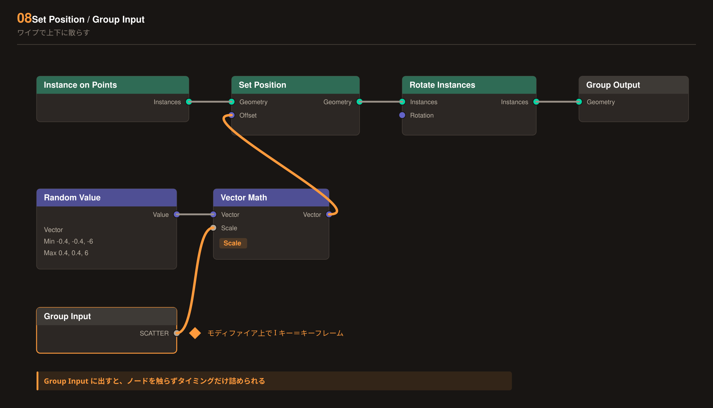

Blender 5.x / Geometry Nodes / EEVEE
上から順に組むだけ。1ステップ＝1つの結果で、右のプレビューが「そこまで組めたら、こう見えるはず」です。見た目が違ったら、そのステップだけ見直せば大丈夫。
ノード名は英語のままなので、Blender の Shift + A → Search にそのまま貼れます。丸い点の色は、Blender のソケットの色に合わせてあります。

まだ光りません。ここでは「球がきれいに整列した」だけで正解です。空のメッシュを1つ置いて、ジオメトリノードのモディファイアを付けて始めます。
Geometry Nodes
Shift + A → Mesh → UV Sphere。見えるはず：整列・全消灯

マテリアル側の配線です。この時点では全球が同じ明るさで光ります。やっているのは「明るさを外から受け取る穴を開ける」作業。
Shading（マテリアル）
Geometry Nodes（つなぎ直す）
Attribute の Type は初期値が Geometry。必ず Instancer に変えてください。球そのものではなく「球を配っている格子」から値をもらうからです。Value ノード（1.0）を Emission の Strength に直結して、全部光ることだけ先に確認しておくと安心です。見えるはず：全点灯・ムラなし

模様の「種」をつくります。角から遠いほど大きい数値。まだ止まったグラデーションですが、これが波の元になります。
Geometry Nodes ／ Instance on Points より前 に入れる
Grid → Store Named Attribute → Instance on Points。点に入れた値は、インスタンス化のときに自動で球へ引き継がれます。逆だと引き継がれません。見えるはず：角からのグラデ・静止

距離に時間を混ぜると、模様が「送られて」見えます。ここで初めて動きます。
Vector Math と Store Named Attribute の あいだ に割り込ませる
Add に変えるだけです。見えるはず：波が外へ送られる

04 のままだとフワフワして「電球」に見えません。中間の明るさを切り落として、点いてる／消えてるをハッキリ分けます。
Sine の直後に足す
Greater Than の代わりに Float Curve を使い、立ち上がりを急・落ちを緩やかに描きます。見えるはず：点／消がパキッと

ここが本命です。電球の格子を 0〜1 の平面とみなして、AE で作った白黒連番をそのまま貼ります。ストライプ・点々・ダイヤ・文字送り──全部この1本の仕掛けで出せて、タイミングは AE 側で秒単位に詰められます。
Geometry Nodes（04〜05 とは別ライン。並列に足す）
Shading（マテリアル）
Extend に。初期値の Repeat のままだと、いちばん右の列に画像のいちばん左の列が出ます。ストライプだとハッキリ破綻します。Image Sequence にすると Frames（枚数）／Start Frame（再生開始）／Offset（何枚目を頭にするか）／Cyclic（ループ）が出ます。Offset があるので、同じ連番を使い回して、カットごとに頭出しをずらすことができます。素材1本で何カットも持たせられます。連番の解像度と、Vector Math の数値
連番は正方形ではなく、電球の数そのもので作るのが一番きれいです（1ピクセル＝1電球）。AE では大きいコンプでデザインし、それを電球の数のコンプにネストして書き出します。
電球の数を変えたら下の計算機に入れてください。そのまま Vector Math に打てる数字が出ます。
Divide 10 → Add 0.5）は、電球の中心ではなくピクセルの境目を拾うので、端の1列が半個ぶんずれます。ぼやけた大きい模様なら気づきませんが、1px＝1電球でやるならこの3行に差し替えてください。再生中：ストライプ送り
AE で描いた模様が、そのまま電球になります。プレビューは3種類を自動で切り替えています。

球を別の形に入れ替えます。全部★にするのも、点ごとにランダムに混ぜるのも同じ仕掛けです。
先に ★ と ◆ を1つのコレクション（例 BULB_SHAPES）に入れておく
Object Info をつなぐだけ。見えるはず：★ ◆ ● が混在

カットの切り替わりで、固定されていたはずの電球が実際に飛び散る。スライダー1本で動くようにしておくのがコツです。
Instance on Points の あと に入れる
I キーでキーフレームが打てます。以降はノードを触らずに、タイミングだけ詰められます。見えるはず：SCATTER で飛散

最後の仕上げ。ノードではなくレンダー設定側です。ここまでの素材が一気に「電飾」になります。
Glare ノードで作ります。3Dビューのヘッダから Viewport Compositing を有効にすると、ビューポート上でも滲んで見えます。見えるはず：完成形
Extra / 拡張編
ここから先は、基本の9ステップが動いてからで構いません。電球ごと・列ごとに色を変える方法を3つ。どれも既存のノードを壊さずに足せます。
いちばん自由で、ジオメトリノードは一切さわりません。連番を白黒ではなくカラーで書き出すだけ。色も明滅も、全部 AE 側で完結します。
Shading（マテリアル）／ 06 の Image Texture から2本に分ける
見えるはず：色も明滅も AE 任せ
色はジオメトリノードで固定して、明滅だけ AE で制御する分け方。色を一度決めたら触らずに済むので、振り付けのやり直しが速くなります。
Geometry Nodes ／ また別ラインを並列に足す
Shading（マテリアル）
Color Ramp に虹の色を並べれば列ごとのレインボーです。Interpolation を Constant にすると色が混ざらず、帯がくっきり分かれます。電飾らしくするならこちらです。Vector Math (Distance) を使えば中心から外へ虹が広がります。見えるはず：列ごとに色が変わる
B とほぼ同じ。入口を Position から Random Value に差し替えるだけです。
Geometry Nodes
Color Ramp に好きな色を3〜4色だけ置くのがコツ。完全な虹より、少ない色がバラけて混ざるほうが看板らしく見えます。見えるはず：4色がバラけて混ざる
色と明滅を別々のノードで受け持たせると、あとの調整が一番ラクになります。
Attribute (hue) → Color Ramp → Emission の Color
Attribute (bulb_uv) → Image Texture → Emission の Strength
色は一度決めたら触らず、振り付けだけ AE で何度でもやり直せます。06 にノードを2つ足すだけで組めます。
この4つで、ほぼ全部の「光らない」が直ります。上から順に確認してください。
Attribute の Type が Geometry のままになっていませんかいちばん多い原因です。Instancer に変えてください。球そのものではなく、球を配っている格子が値を持っています。
Realize Instances が入っていませんかこれが入った瞬間、Instancer からの受け渡しが切れて真っ黒になります。しかも数千個で極端に重くなります。入れないのが正解です。
Store Named Attribute の位置と名前Instance on Points より 前 にあるか。Domain が Point か。名前がマテリアル側と 1文字違わず 同じか（light_val）。大文字・小文字も区別されます。
Set Material をつなぎましたかジオメトリノードで作った形には、オブジェクトのマテリアルが自動では乗りません。Set Material ノードで明示的に指定します。
01〜05 は「仕組みの理解」で、模様を1つ作るたびにノードを組み替える必要があります。映像の尺合わせには向きません。
実制作では 06 を主役にしてください。仕掛けを1本に固定して、模様の設計とタイミングは全部 AE 側でやる。これが一番速く、一番やり直しが効きます。01〜05 は 06 の上に重ねる「揺らぎの足し算」として残しておくと、機械的になりすぎません。